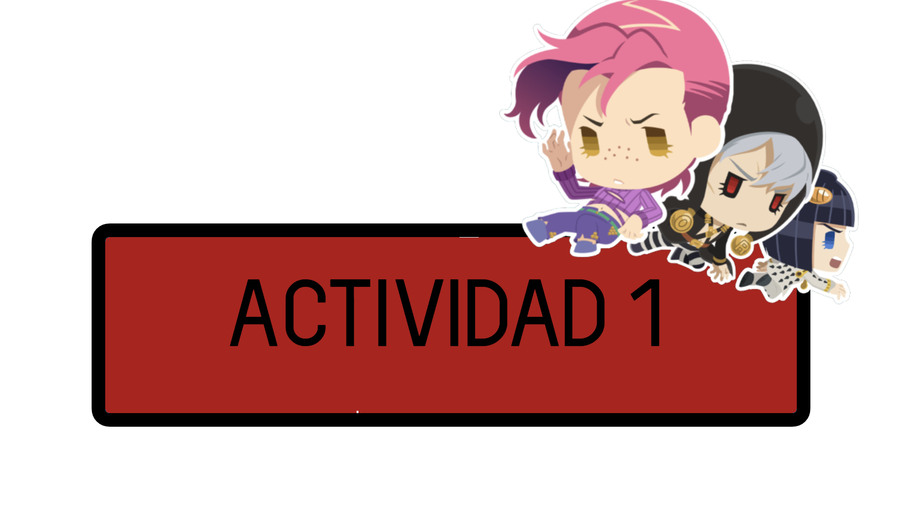

INFORME SOBRE C++
¿QUE ES C++?
C++ es un lenguaje de programacion de 1979 creado para poder ampliar el lenguaje C, siendo un lenguaje hibrido
en este informe expondremos los conseptos basicos para programar en este lenguaje
una de las cosas mas importantes sobre este lenguaje son las librerias que hacen que todos los tipos de comandos funcionen, existen muchisimas librerias pero por hoy veremos las mas basicas

luego estan el int, para ingresar variables y el void que sirve entre otras cosas para activar el gotoxy que sirve para ubicar textos en diferentes partes de la pantalla
el COUT y CIN son unas de las cosas mas importantes pues sirven para mostrar(COUT) e ingresar(CIN) datos
el if nos ayuda poder poner diferentes opciones para el ususario y dejarlo elegir la que prefiera
tambien se pueden hacer operaciones matematicas con este simple codigo
y por ultimo return es para terminar el proceso de golpe despues de una accion previamente programada
MUCHAS GRACIAS POR LEER ESTA GUIA BASICA DE C++